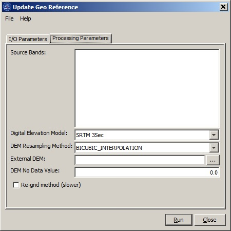

Update Geo Reference Operator
This operator updates the Geo reference of the source
product. The geocoding generated from the latitude and logitude tie
point grids of the source product is generally not accurate. This is
because topography was not taking into consideration when latitude and
longitude tie point grids were generated. This operator generates a new
geocoding for a given source product using DEM, orbit state vectors of
the source image, and mathematical modeling of SAR imaging geometry.
Interpolation Methods Supported
The operator supports the following interpolation methods:
- Nearest-Neighbour interpolation
- Bilinear interpolation
- Cubic Convolution interpolation
- Bicubic interpolation
- Bisinc interpolation
DEM Supported
Right now only the DEMs with geographic coordinates (Pא, Pא, Ph) referred to global
geodetic ellipsoid reference WGS84 in meters are properly supported.
By default the following DEMs are available:
- ACE
- GETASSE30
- SRTM 3Sec GeoTiff
- ASTER GDEM
Since
the height information in ACE and SRTM is referred to geoid EGM96, not WGS84
ellipsoid, correction has been applied to obtain height
relative to the WGS84 ellipsoid.
User can also use external DEM file which, as specified above, must be WGS84 (Pא , Pא, Ph) DEM in meters.
Parameters Used
The following parameters are used by the operator:
- Source Band: All bands (real or virtual) of the source product. User can select one
or more bands for target product. If no bands are selected, then by default all
bands are selected. The selected bands together with lat_band and lon_band are output.
- Digital Elevation Model: DEM types. Choose from the automatically
tiled DEMs or specify using a single external DEM file by selecting
"External DEM".
- DEM Resampling Method: Interpolation method for obtaining
elevation values from the
original DEM file.
- External DEM: User specified external DEM file. Currently only WGS84-latlong
DEM in meters is accepted as geographic system.
- DEM No Data Value: Place holder for no data cell in DEM.
- Re-grid method: Checkbox indicating selection of one of the two
methods for defining lat/lon grid. By default, this checkbox is
unselected and source geocoding is used as the starting point in
computing the new geocoding. If this checkbox is selected, then a
lat/lon grid that covers the imaged area is used in computing the new
geocoding.
